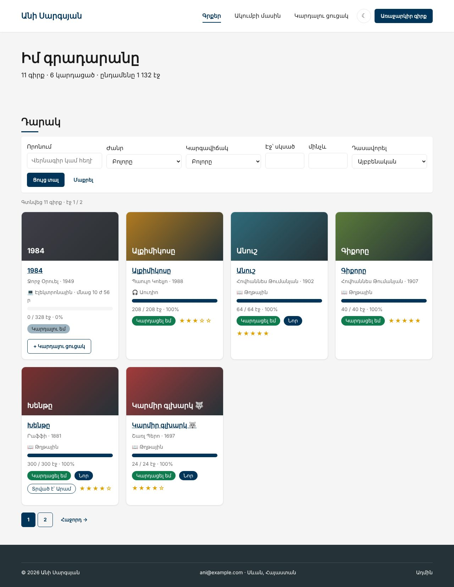
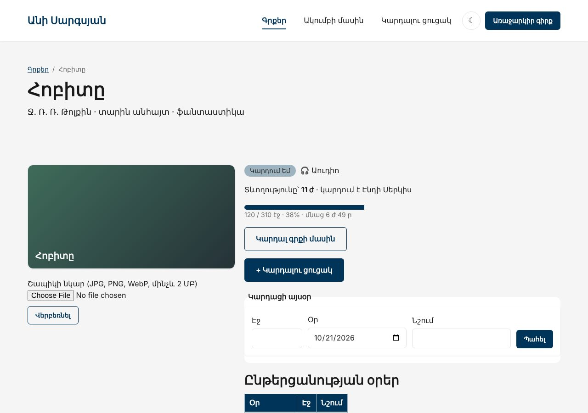

Տնային աշխատանք · PHP Դաս 13 · մինի-նախագիծ
Ակումբում կան աուդիոգրքեր և էլեկտրոնային գրքեր։ Book-ը դառնում է abstract, իսկ PaperBook-ը, AudioBook-ը և EBook-ը ամեն մեկն իր ձևով են հաշվում մնացած ժամանակը։ Թղթային գիրքը կարելի է տալ ընկերոջը (Lendable), աուդիոն՝ լսել (Listenable)։
Դաս 01–13․ extends, abstract, parent::__construct, interface, implements, instanceof, protected, պոլիմորֆիզմ, կոմպոզիցիա, ALTER TABLE … ADD COLUMN։ Namespace և Composer՝ Դաս 14։


== Առանց parent::__construct()
Error: Typed property Book::$title must not be accessed before initialization
→ Օբյեկտը ստեղծվեց, բայց ծնողի դաշտերը չլրացվեցին։ Սխալը՝ առաջին կարդալիս, ոչ ստեղծելիս
== Պոլիմորֆիզմ
EBook · 💻 Էլեկտրոնային · մնաց 10 ժ 56 ր
AudioBook · 🎧 Աուդիո · մնաց 6 ժ 49 ր
PaperBook · 📖 Թղթային · մնաց 14 ժ
== if/elseif-ով (ամեն նոր տեսակ = ամեն այսպիսի տեղում նոր ճյուղ)
💻 Էլեկտրոնային · մնաց 10 ժ 56 ր
🎧 Աուդիո · մնաց 6 ժ 49 ր
📖 Թղթային · մնաց 14 ժՇարունակիր քո նախագիծը։ Եթե բաց ես թողել նախորդ դասը, սկսիր Դաս 12-ի օրինակից։
starter/css/php-13.css — «Տրված է» պիտակstarter/sql/upgrade-13.sql — չորս նոր սյունակ և տեսակները| Գործարկել |
|---|
php -S localhost:8000 |
starter/sql/upgrade-13.sql-ը․ format, minutes, narrator, lent_toabstract public function formatLabel(): string և minutesLeft(): intBook::fromRow()՝ ֆաբրիկա match ($row['format'])-ովpublic static function fromRow(array $row): static
{
return match ($row['format'] ?? 'paper') {
'audio' => AudioBook::fromRow($row),
'ebook' => EBook::fromRow($row),
default => PaperBook::fromRow($row),
};
}PaperBook implements Lendable՝ lentToName, 2 րոպե էջինAudioBook implements Listenable՝ minutes, narratorNameEBook՝ երրորդ տեսակ, կոնստրուկտոր չունի (տնային 2)public function __construct(
int $id,
string $title,
string $slug,
string $author,
?int $year,
int $pages,
int $read,
string $genre,
int $rating,
string $color,
?string $link,
?string $cover,
string $createdAt,
public readonly int $minutes = 0,
public readonly ?string $narratorName = null,
) {
parent::__construct($id, $title, $slug, $author, $year, $pages, $read, $genre, $rating, $color, $link, $cover, $createdAt);
}Lendable՝ isLent(), lentTo()Listenable՝ durationMinutes(), narrator()totalListening(array $books)՝ ընդունում է ցանկացած Listenable (տնային 5)DurationFormatter::format(200) → «3 ժ 20 ր»Book::timeLeftLabel()-ը ՕԳՏԱԳՈՐԾՈՒՄ է ձևաչափիչը, չի ժառանգում (տնային 9)lab-inheritance.php՝ մոռացված parent::__construct() (տնային 3), մեկ foreach երեք տեսակի համար և նույնը if/elseif-ով (տնային 6, 7)new Book(...)-ը տալիս է սխալ․ դասը abstract է| Սխալ | Ինչպես ուղղել |
|---|---|
must not be accessed before initialization | Ժառանգի կոնստրուկտորում չկա parent::__construct(...) |
Class "Book" not found PaperBook-ում | require-ի հերթականությունը․ ինտերֆեյսներ, ծնող, ապա ժառանգներ |
Call to undefined method PaperBook::durationMinutes() | Կանչելուց առաջ՝ instanceof Listenable |
Class AudioBook contains 1 abstract method | Ժառանգը պետք է իրագործի ծնողի բոլոր abstract մեթոդները |
Սրանք Դաս 13-ի տնային աշխատանքի կետերն են։ «մինի-նախագծում» նշվածները արդեն կատարել ես վերևի քայլերում՝ Անիի ակումբում։ Մնացածը կատարիր ՏեխնոՄարկետում, ինչպես գրված է դասում։
ServiceProduct (վերանորոգում, տեղադրում)։ Ի՞նչ մեթոդներ պիտի իրագործի։ մինի-նախագծումparent::__construct()-ի սխալը։ մինի-նախագծումDiscountable ինտերֆեյսը և իրագործիր այն։Shippable և հաշվում ընդհանուր քաշը։ մինի-նախագծումforeach-ով երեք տարբեր տեսակի ապրանք։ մինի-նախագծումif/elseif-ով։ Համեմատիր տողերի քանակը և ընթեռնելիությունը։ մինի-նախագծումformattedPrice()-ը կոմպոզիցիայով՝ MoneyFormatter դասով։ մինի-նախագծումԵրբ բաժին 03-ի բոլոր կետերը նշված են, բացիր օրինակը։ Օրինակում lab-… ֆայլերը փորձնական են․ դրանք հաջորդ դասի օրինակում այլևս չկան։ Գործարկելուց առաջ ստեղծիր բազան example/sql/-ի ֆայլերով և config.php-ը։ Գտիր մեկ բան, որ դու արել ես այլ կերպ, և մտածիր՝ որն է ավելի հասկանալի և ինչու։ Քո լուծումը կարող է տարբերվել և լինել ճիշտ։